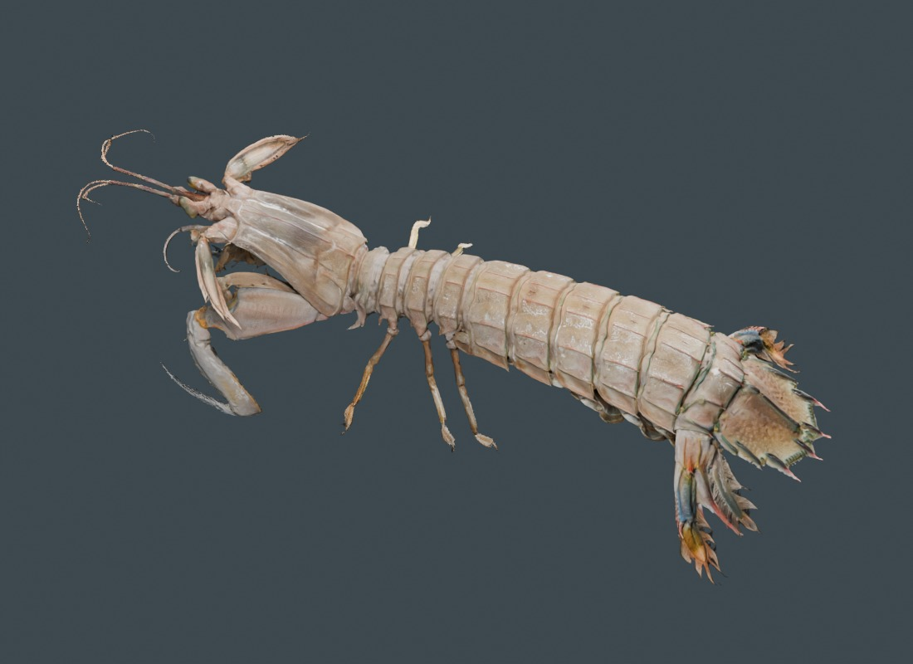
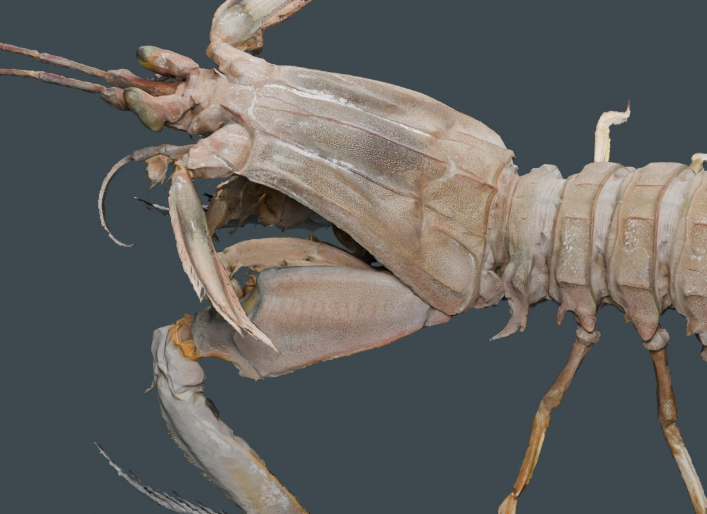
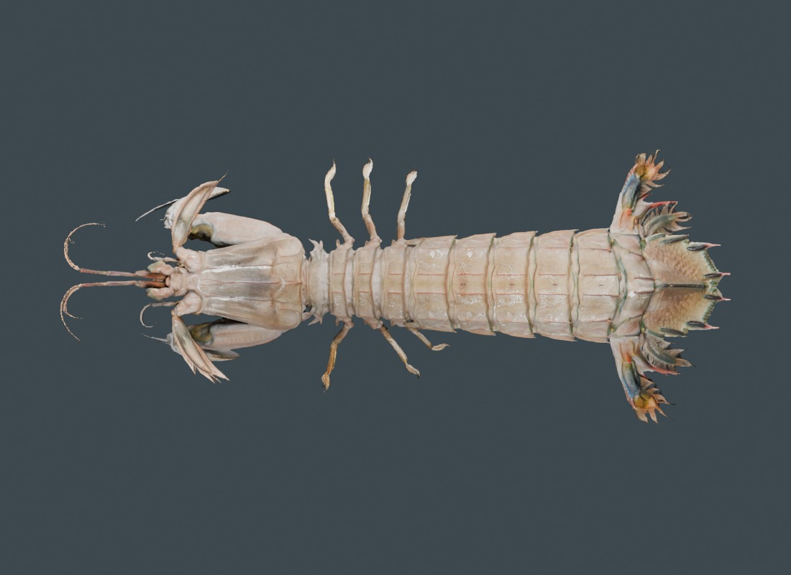
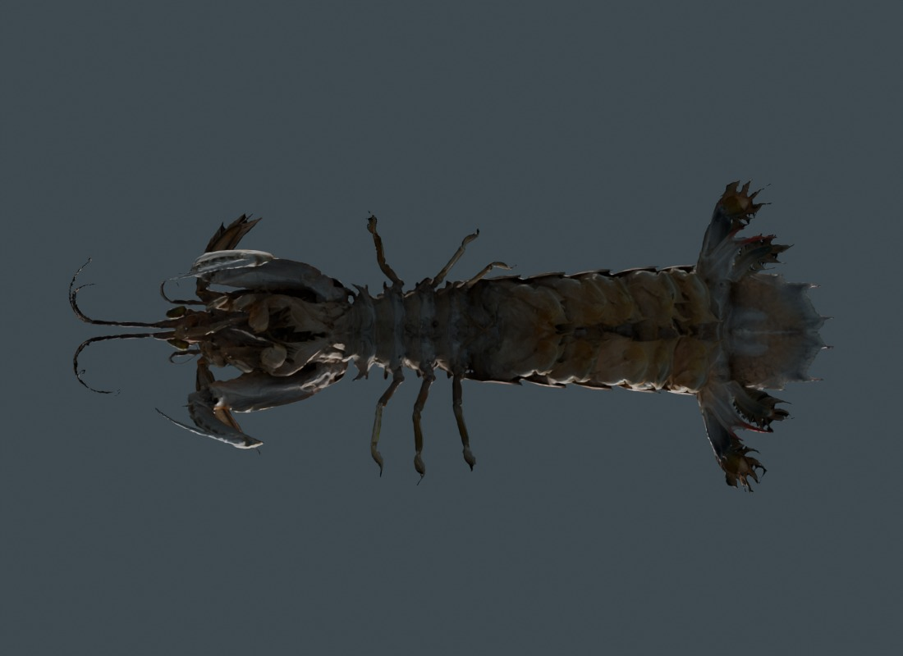

Open the textured Japanese mantis shrimp →Original photographic colour, on the correct species.
Japanese mantis shrimp · Oratosquilla oratoria · v0.7.9
The newly supplied DigitalLife Model 105 GLB contains no texture images or vertex colour. Following the requested fallback, this release adds the separate CC0 Japanese species from ffish.asia / floraZia.com. The Atlantic Squilla empusa record and its evidence remain separate.
Six photographic maps preserve the source specimen's pale shell, segment markings, eyes and appendages. The separate cube, cameras and lights were removed. Surface reduction retains primitive borders to avoid texture seams; the web specimen has 1,038,399 triangles. The web maps are resized to at most 3,072 pixels. Two checked transport parts reconstruct the GLB in the browser.
Photographs record this source specimen under its original lighting. They are not calibrated reflectance or proof of live-animal colour. Scan imperfections remain; no missing anatomy has been invented. This is a static specimen. Articulated movement and physiological validation remain pending.

Exported GLB in Blender studio lighting.
Eye and shell detail from the source maps.
Dorsal surface and segment markings.
Ventral inspection; source scan limitations remain.A separate molecular record
NC_014342.1 supplies 15,783 bases and its deposited mitochondrial annotations. It is not the genotype of this scanned individual or a complete nuclear genome. The interactive DNA study retains source translation restrictions. Species-specific sensory simulation remains under maintenance; no Atlantic-shrimp receptor parameters are transferred.
Source and reuse
ffish.asia / floraZia.com · source model · CC0 · Changes and provenance
Compare the separate Atlantic mantis-shrimp record →